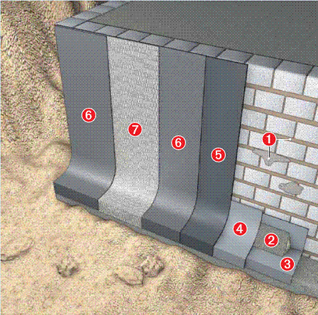

Битумная гидроизоляция
СИСТЕМА ВНЕШНЕЙ ГИДРОИЗОЛЯЦИИ - Битфлекс / К100 и Эластичный серый шлам К11 БИТУМНЫЕ ГИДРОИЗОЛЯЦИОННЫЕ ПОКРЫТИЯ
Гидроизоляционная масса Битфлекс и К100 являются полимермодифицированными, однокомпонентными и несодержащими наполнителей битумными покрытиями для долговременной защиты подвалов, подземных гаражей, фундаментов, компостных ям и т.п. от грунтовой сырости и напорной воды.
Они готовы к применению, и после высыхания становятся водонепроницаемыми, устойчивыми к образованию трещин, высокоэластичными и устойчивыми к естественно образующимся бетоно-разрушающим факторам. Гидроизоляционные массы не содержат наполнителей, обеспечивая, таким образом, легкость в нанесении при помощи щетки или валика.
Быстрота и простота в использовании является еще одним положительным качеством. Расход гидроизоляционной массы в зависимости от наносимого материала составляет от 1,0 до 2,5 кг/м2. Гидроизоляционные материалы марки HEY DI в течение десятилетий зарекомендовали себя с наилучшей стороны и соответствуют всем современным европейским требованиям по качеству. Данные материалы испытаны независимыми институтами для различных видов использования.
БИТУМНЫЕ ПОКРЫТИЯ БИТФЛЕКС / К100
КОМПОНЕНТЫ СИСТЕМЫ:
a) Трассовы й раствор
й раствор
b) Уплотнительный раствор
c) Эластичный серый шлам К11
d) Битфлекс или К100 - черная
e) Покрытие уплотнительное 1К
f) Трикотажная лента К100
g) Клейкая лента SK
h) Дождезащитное средство
ОБЛАСТИ ПРИМЕНЕНИЯ:
Подвальные помещения, подземные гаражи, фундаменты, стыки, проходки труб, компостные ямы и т.п.
- предохраняют от сырости и напорной воды
- наносится на все твердые минеральные поверхности
- высокая устойчивость к образованию трещин, повышенная эластичность и отличные водоотталкивающие свойства
- высокоэкономичны, не содержат наполнителей
- могут наноситься механизированным способом
Испытаны независимыми институтами для различных применений
НАДЕЖНАЯ ГИДРОИЗОЛЯЦИЯ, ПОДТВЕРЖДЕННАЯ ПРАКТИКОЙ
1. Трассовый раствор: выравнивающий раствор с максимальным размером частиц до 4 мм. Предназначен для выравнивания поврежденных мест перед нанесением Эластичного серого шлама К11.

2. Уплотнительный раствор: полимероблагороженный раствор для ремонтных работ с отличной прочностью сцепления и сжатия. Для изготовления галтелей.3+4. Эластичный серый шлам К11: 2-х компонентный гидроизоляционный раствор, устойчив к нагрузкам, водонепроницаем. Изолирует от воды, воздействующей изнутри и снаружи.
5. Гидроизоляционная масса
Битфлекс или К100 - черная:
грунтовка, разбавляется водой в
пропорции 1:6 или 1:1.
6. Гидроизоляционная масса
Битфлекс или К100 - черная:
долговечная изоляция от влажности грунта и напорной воды.
7. Трикотажная лента К100:
эластичная и стойкая к атмосфер-
ной коррозии ткань из полиэфира.
Для усиления Гидроизоляцион-
ной массы Битфлекс и К100 -
черной: в местах с наибольшей
опасностью образования трещин
и подверженных повышенным
нагрузкам.
Клейкая лента SK: высокоэластичная лента, клеящаяся с двух сторон, применяется в холодном состоянии. Служит для эластичного склеивания трещин и разделительных швов зданий.
Толстослойное покрытие 1К: для укрепления защитных, дренажных и изоляционных плит.
Дождезащитное средство: низковязкий раствор для разбрызгивания. Предназначен для защиты свеженанесенной гидроизоляционной массы от влаги.